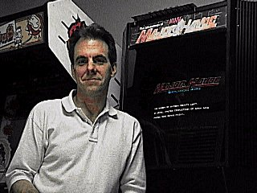

|
Last Page Update- April 23, 2014
(See what has changed on the News page)
Welcome to The World Of Owen Rubin.
Here you will find my stories about Atari and Bally, two of the early pioneer
companies in coin-operated video games, and the games and toy I designed
or worked on while working there.
I was on the Arcade Outsider's Pod Cast #29 with John Jacobsen, Joe Senigaglia, and Shawn Williams. We had a blast and talked about a lot of things old Atari. Have a listen here. I come on around 2 hours in! (Yea, it is long!)
Feeling
Nostalgic? for some good old Atari game action. Check it out!
Click here to hear Owen comment on what
makes a good game (from a 1982 interview).
OK, it has been a long while since this site was updated. Unfortunately,
Brian, who used to keep this site going for me got very busy with other
things in his life, and I just did not jump in soon enough to take over.
Sorry about that. And thank you Brian for all the good work, and feel
free to drop by and make some changes anytime you like.
So, time for me to take it over myself and add some new content. So,
over the next few months, I will try and add some new content, and maybe
even change it to a new site layout. I will just have to see how much
time I have. In the meantime, look around, and send me an email. I will
asnwer, and I will start posting email to the site again. And if you
see any bad links, please let me know. Thanks.
OK, now, a liitle about me: Yes, I used to work for Atari as one of the
first coin-op game programmers. I created or worked on Major Havoc, Space
Duel, and many other games (Cannonball, Sky Diver, Tube Chase, Tunnel
Hunt, Sebring, Malibu Grand Prix, and others). I have posted some stories
here, but if you want to see some new ones, simply ask a cool question
about Atari in the early days, and up it goes.
That's me in the picture at the right, standing next to the original
Major Havoc Prototype. And believe it or not, it still runs! And yes,
that is a Dig Dug prototype right behind me. I also have a Space Duel
Cocktail as well, but the camera is actually sitting on it!
Also, if you're a Macintosh or PC user (you will need a newer one with
some power), try the game emulation pages. With the Mame game emulator,
you can play the actual game right on your machine. See the links at
the left for more info. (There is both a PC and Mac version that play
the same game ROMS.
Thanks for stopping by. And as always, feel free to drop me a line at
any time using the contact link at the left.
|

Need an expert witness covering
video games, broadband, digital TV,
or computer releated issues?
Contact me for more info
at owen-at-orubin.com |